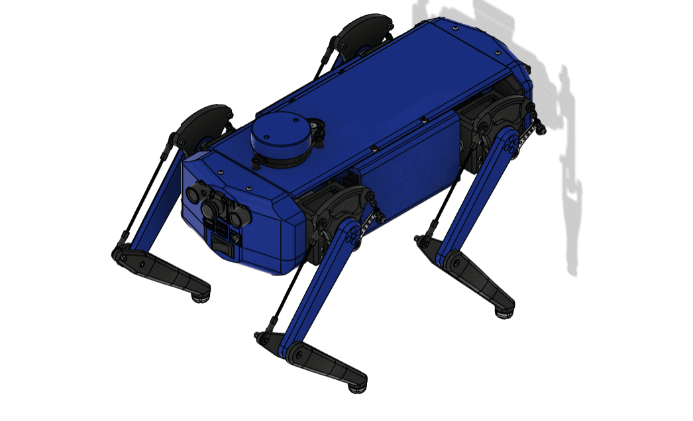

QuadR - Quadruped Robot Prototype
QuadR is a modular, terrain-adaptive quadruped robot engineered for agricultural, research, and educational purposes. With articulated leg movement (hip, knee, ankle) and ROS integration, it offers superior mobility on uneven, muddy farm terrain. Built using lightweight 3D-printed parts and powered by LiPo batteries, it supports payload tools and joystick/manual or semi-autonomous operation.
7 Views of the Robot





Fabrication & Actuation Process
Step 1: 3D Printing the Left Leg
Design and 3D print the left leg using PLA. Joints are modeled with clear DOF separations and assembled after printing.


Step 2: Actuation via Nano & ROS
Using Arduino Nano and ROS Serial, servo signals were generated to move the joints. We validated response and smooth motion.
Step 3: Two-Leg Gait Coordination
Added a second leg, synchronized via ROS. This marked the first coordinated gait cycle and ROS feedback control testing.
Description of the Invention
Agriculture is vital to India, yet many farmers lack access to affordable automation. Our quadruped robot tackles issues like labor shortages, terrain difficulty, and crop disturbance. Its legged design ensures adaptability to narrow rows, muddy fields, and irregular plots. The platform is modular, AI-ready, and low-cost.
Technical Overview
- Mobility: 4 articulated legs (3 DOF per leg) for walking, squatting, turning.
- Control: Arduino + ROS 2 with joystick or semi-autonomous mode.
- Modularity: Attach sprayer, weeder, camera, etc.
- Construction: Lightweight 3D-printed ABS/PLA frame.
- Power: 3S/4S LiPo Battery – 1–2 hours run time.
- Communication: Serial and Wi-Fi protocols.
Applications
- Agriculture: Weeding, spraying, crop monitoring.
- Education: ROS 2 learning, mechatronics, gait training.
- Research: Sensor fusion, AI vision, terrain simulation.
Conclusion
Team QuadR envisions this system to empower small farmers with affordable robotics while enabling students and researchers to explore cutting-edge robotics. The quadruped's rugged adaptability, open-source architecture, and modular design make it a promising platform for the future of Indian agriculture and education.